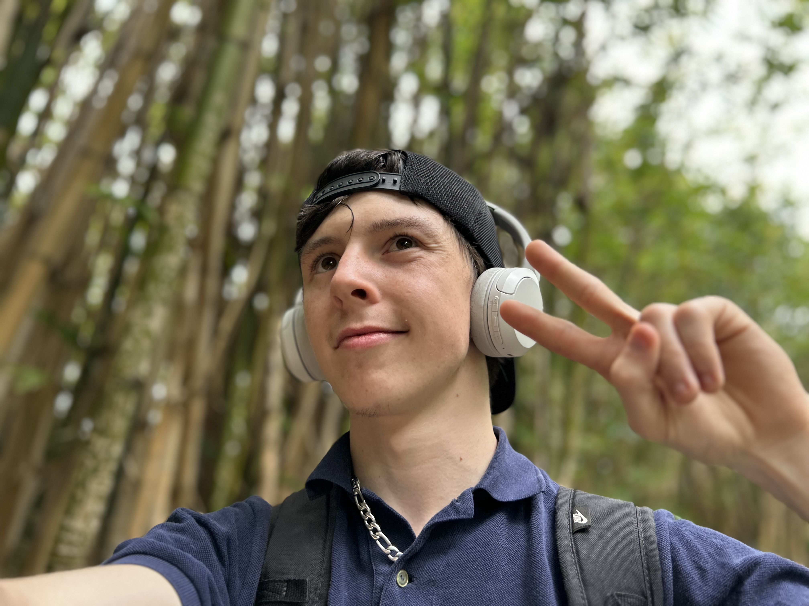

Connor Hood
AI Specialist · ML Datasets · Full Stack Developer
Objective
Seeking work in ML datasets, education, robotics, and full stack web development — bringing together hands-on production and assembly-line experience with software engineering and a drive to help build a great future.
Software Engineering
- Personal work on large-scale ML datasets, including web-scraping and curating sets across varied numerical base systems, and language/action datasets (synchronous ASL hand-data video).
- Post-training data collection system operation and management (mocap).
- VLA (vision-language-action) model improvements with a focus on ‘lossy’ compound model behavior to improve performance for general robotics models.
- AI Minecraft bot development for physicalised ‘agent’ deployment in video games using the Mindcraft library.
- Extensive web development with React and Tailwind.
- Implemented a fork of MetaMask to optimise co-sig functionality and OpenClaw integration; prior UX/UI work in the wallet space.
- AI-native development of landing/hero pages, backend database logic, query handling, concurrent operations and triage logic, and algorithm design.
Science & Technology Education
- Space Flight News — voice actor and co-founder, showcasing a passion for science, technology, and tech-focused education.
- Guest speaker and lecturer — psychology (2023) and technology & AI (2024) at the Venturer retreat.
Production, Manufacturing & Logistics Various sectors
Extensive experience in production, manufacturing, and warehouse work across key sectors.
- Biomedical — Thermo Fisher Scientific Mar–Oct
- Food & Beverage — Coopers Brewery 2022–2024, Haigh’s Chocolates 2024, Senector 2023
- Construction Supplies — BlueScope Steel 2021–2022
Education
- Flinders University — University preparatory program 2023
- Open Access College — High school graduation certificate 2022
Volunteering & Awards
Scouts SA Volunteer 2022–2025
- Queen Scout Award 2022
- Special Service Award 2025
- Certificate III in Business 2025
- Certificate III in Active Volunteering 2023
Other Notable Awards
- Rotary Youth Leadership Awards (RYLA) 2023
- National Volunteer Week recognition 2024